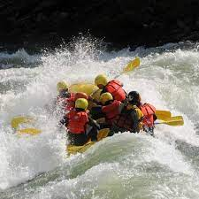
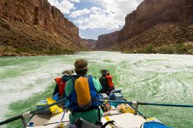
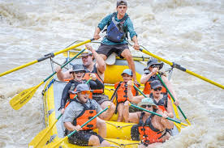
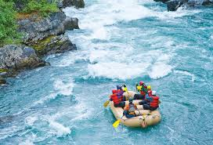
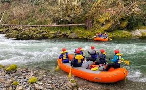

1/2 Day Raft Trip

Experience the thrill of white water rafting in just half a day! Our 1/2 day trip is perfect for those looking to enjoy a quick and exhilarating adventure on the river. You'll navigate through exciting rapids, take in breathtaking scenery, and create memories that will last a lifetime. Ideal for beginners or those short on time, this trip promises an adrenaline-packed journey that fits seamlessly into your schedule.
1 Day Raft Trip

Dive into a full day of white water excitement! Our 1-day trip immerses you in the heart of the river's rapids, offering a perfect balance of adventure and exploration. You'll conquer challenging rapids, enjoy scenic stretches, and have ample time to relax and savor the beauty of the surrounding wilderness. Whether you're a seasoned rafter or a first-timer, this trip provides an unforgettable day of fun and camaraderie.
2 Day Raft Trip

Extend your white water adventure with our 2-day trip! This immersive experience allows you to delve deeper into the river's twists and turns, navigating exhilarating rapids and enjoying serene moments along the way. Camp under the stars at a riverside campsite, share stories around the campfire, and wake up to the sounds of nature. It's the perfect blend of thrilling rafting and outdoor camping for a truly memorable two-day escapade.
3 Day Raft Trip

Embark on an unforgettable 3-day white water rafting journey! This extended trip offers an immersive experience, allowing you to fully appreciate the river's diverse landscapes and challenging rapids. Spend your days conquering exhilarating stretches of white water, and your nights camping along the riverbanks. This trip is designed for adventure enthusiasts seeking a more in-depth exploration of the river and its surroundings.
4 or 5 Day Raft Trip

For the ultimate white water rafting experience, choose our 4 or 5-day trip! This extended adventure takes you on an epic exploration of the river's entire course, offering an unparalleled opportunity to conquer challenging rapids, witness diverse wildlife, and forge lasting connections with fellow rafters. Camp along the river each night, creating memories that go beyond the thrill of the rapids. This trip is perfect for those craving a multi-day expedition filled with excitement and natural beauty.
Book your preferred white water rafting trip today and get ready for an adrenaline-pumping adventure on the water!